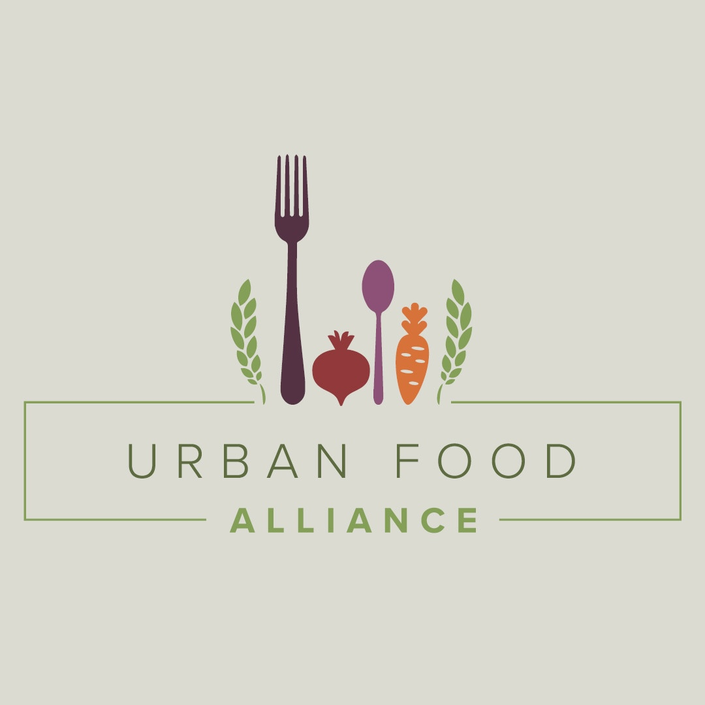
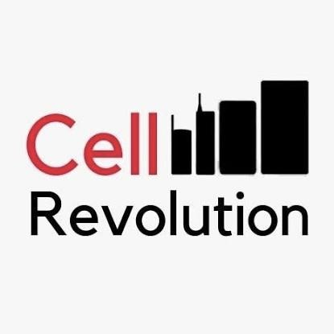
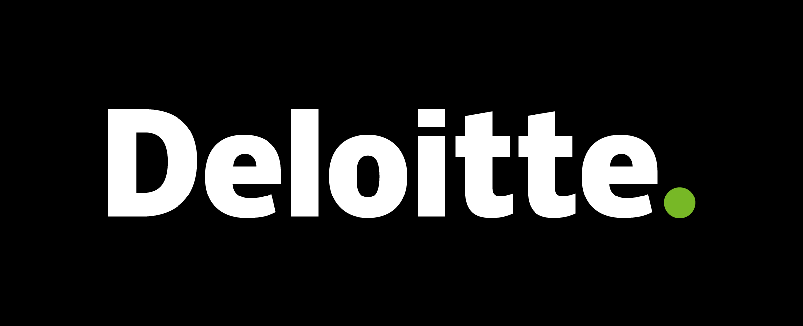
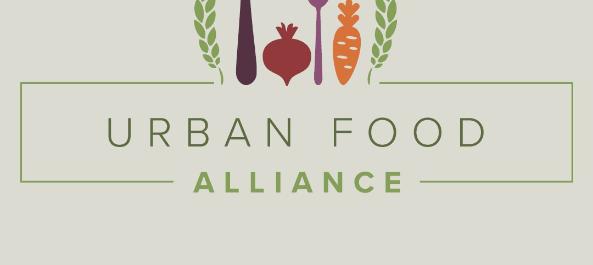
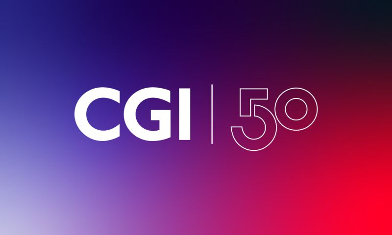

Nadheer Nilamutheen
Business Analytics & Information Technology at Rutgers Business School
About Me
Experience

Urban Food Alliance
I acted as a bridge between the organization’s mission to fight food insecurity and the implementation of modern AI tools to improve efficiency. This involved conducting detailed gap analyses and creating the technical documentation necessary to build smarter, data-driven workflows.
MAS Youth Center of New Jersey
I oversaw the center's digital outreach strategy by automating social media campaigns and analyzing engagement trends to better serve the community. Tracking these key performance metrics allowed me to refine our messaging and ensure that vital resources reached those populations.

Cell Revolution LLC
I managed the quality assurance process by testing and diagnosing hardware faults across a high volume of mobile devices to ensure reliability. Identifying these technical glitches allowed me to maintain strict functional standards before any product was cleared for distribution.
Education
Rutgers University–New Brunswick
Coursework
Projects
UNCTAD - Rutgers Model UN 2026
I wrote a forty-page brief on how food financialization affects global inflation for Rutgers Model United Nations 2026. My role also includes leading high school students through debates to help them understand and solve these international economic and policy issues.

HealthE Go-To-Market Strategy
I worked with two students to build a pitch deck for launching a healthcare app designed for underserved areas. We analyzed family budgets and demographic data to ensure its affordability for rural communities, which secured second place for our team.

Food Relief Donor Assistant - AI Chatbot
I served as the business analyst for an AI chatbot designed to help donors contribute to food relief efforts easily. My work focused on writing the official requirements and technical documentation needed to guide the development team during the build.

RU Parking?
I worked with a team to design a system that solves parking congestion for Rutgers commuter students. We proposed using deep learning models and sensors to provide real-time lot availability updates through a mobile app to reduce daily travel stress.